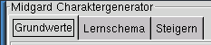
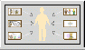
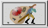

Zu Beginn öffnet sich das MAGUS-Hauptfensters auf der Seite "Grundwerte":
Es gibt vier Hauptfenster, die über Reiter zu erreichen sind:

Lernschemata

Dieser Reiter führt zu den Lernschemata.
Auf dieser Seite werden die Fertigkeiten ermittelt, die ein Abenteurer zu Beginn besitzt
Steigern
 Hier findet das Lernen und Steigern von Fertigkeiten statt.
Hier findet das Lernen und Steigern von Fertigkeiten statt.
Außerdem finden der Gradanstieg und -anpassung eines Abenteurers statt.
Ausrüstung

Hier kann der Abeneteurer ausgerüstet werden.
zurück zur Hauptseite